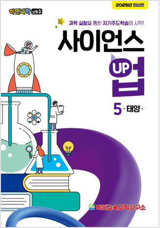

-
과학 탐구의 9단계 여정
과학의 기본부터 심화까지 9단계로 체계적으로 학습
-
최신 교육과정 반영
현행 교육과정과 완벽히 연계된 교재로 학습 목표 달성을 도움
-
풍부한 실험 기회
연간 80여 개의 실험을 통해 과학 탐구를 깊이 있게 경험
-
자율적인 실험 환경
개인 실험 키트로 학생들이 스스로 실험을 주도
-
다양한 학습 자료 제공
이론과 실습을 균형 있게 다룬 풍부한 학습 자료로 학습 효과를 극대화
- 6,7세
- 사이언스 펀 FUN
- 1학년
- 사이언스 탭 TAP
- 2학년
- 사이언스 필 FILL
- 3학년
- 사이언스 맵 MAP
- 4학년
- 사이언스 런 RUN
- 5학년
- 사이언스 업 UP
- 6학년
- 사이언스 올 ALL
- 중등
- 사이언스 탑 TOP
- 중고등
- 통합과학
- 사이언스 FUN (6,7세)
-
사이언스펀
FUN- 워크북
- 실험지
- 실험재료
-
 실험기구상자
실험기구상자
-
- 과학에 첫발을 내딛는 7세 학생들을 위한 단계로, 상위 학년 교과 내용을 기초로 한 다양한 응용 실험을 통해 과학에 대한 흥미를 높입니다.
- 사이언스 TAP / 사이언스 FILL (1~2학년)
-
사이언스탭
TAP사이언스필
FILL- 워크북
- 실험지
-
 실험재료
실험재료
-
 실험기구상자
실험기구상자
-
- 초등 1~2학년을 대상으로 과학의 기본 원리를 배우고 창의적 사고를 기르는 실험 활동을 제공합니다.
- 사이언스 MAP / 사이언스 RUN (3~4학년)
-
사이언스맵
MAP사이언스런
RUN- 워크북
- 실험지
- 실험재료
-
 실험기구상자
실험기구상자
-
- 초등 3,4학년을 위한 단계로, 각 학년별 과학 교과와 상위 학년 과학 교과를 연계한 심화 학습을 통해 응용력을 키웁니다.
- 사이언스 UP 심화과정 (5학년)
-
사이언스업
UP-  워크북
- 실험지
- 실험재료
-
 실험기구상자
실험기구상자
-
- 초등 5학년을 위한 단계로, 각 학년별 과학 교과와 중등 과학 교과를 연계한 기본 학습을 통해 응용력을 키웁니다.
- 사이언스 ALL 응용 심화 실험 (6학년)
-
사이언스올
ALL- 워크북
- 실험지
- 실험재료
-
 실험기구상자
실험기구상자
-
- 예비 중학생들을 위해 6학년 교과와 중등 과학을 잇는 통합 프로그램을 제공하여 중학교 과학 학습을 준비합니다.
- 사이언스 TOP (중등 전학년) / 통합과학 (중고등)
-
사이언스탑
TOP 통합과학-
 워크북
워크북
- 워크북 및 실험 보고서
-
실험재료
- 실험기구상자
-
-
- 사이언스 TOP : 수행평가 완벽 대비 / 기출문제 내신 대비 / 최상위권 문제 수록 / 통합과학 연계 / 마인드 맵 정리
- 통합과학 : 수능 공통 과목인 통합과학 교과 실험을 모두 탄탄비 준비될 수 있도록 구성 / 수행평가 및 내신 대비 / 통합과학(수능) 기출문제 수록